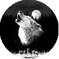

|

|
>> Содержание / Список кланов /
WolvesofOdin
-Деда, деда расскажи сказку, внеслась в комнату стая детворы и побежали к камину, рядом с которым сидел человек в кресле. Было видно по его взгляду, что он о чем то вспоминал, о чем то, что его сильно волновало..
-Хорошо, хорошо, только не шумите – сказал старик. Значит, сказку хотите? Ну что ж…..
Давным-давно, в эпоху Великих войн и завоеваний, жил один король, который был охвачен желанием покорить весь мир. И ему это почти удалось…Лицо старика тронула легкая улыбка…Под его знамена стояла сильнейшая армия на земле. Он шел победным маршем через разные земли, порабощая их и собирая все больше и больше воинов. Король знал, что его уже победить никому не дано, и власть над всем миром, дело времени….И вот, когда он уже был близок к своей цели, его армия вошла на земли, часть из которых была покрыта снегом, а остальная часть лесами. Король с его армией долго бродил по землям стараясь найти хоть какие то признаки жизни, до тех пор, пока не наткнулся на маленький городок, где жили в основном крестьяне и ремесленники. Жители города даже не сопротивлялись, так что флаг короля уже через несколько часов развивался над городскими стенами. Вечером, во время пира, король пригласил в шатер главу города. И когда тот явился начал расспрос:
-Скажи, есть ли где-нибудь поблизости города, или поселения?
-Да мой король, есть….
-Я тебя что, просто так спросил? Говори, где?
(Глава помедлив сказал)
-Мой король, не надо Вам туда идти…..
(от такого поворота событий, король привстал)
-Почему? Или же ты думаешь, что у меня не хватит сил?
-Если Вы туда пойдете, то оттуда не вернетесь….Там живут люди…..которые могут превращаться в волков…
(Король презрительно посмотрел на главу)
-Что за чушь ты мне рассказываешь? Пшел вон отсюда…
Веселье продолжалось до глубокой ночи, и абсолютно никто кроме главы не обратил внимание на туман в лесу, и на огромную кроваво- красную луну.
- Ну что, я их предупреждал……
Продолжение читайте на официальном сайте клана …..
Официальный сайт клана: http://volkiodina.ucoz.ru/
|
 |
|